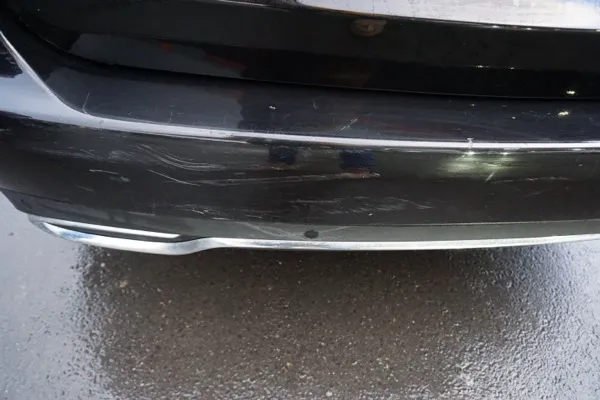
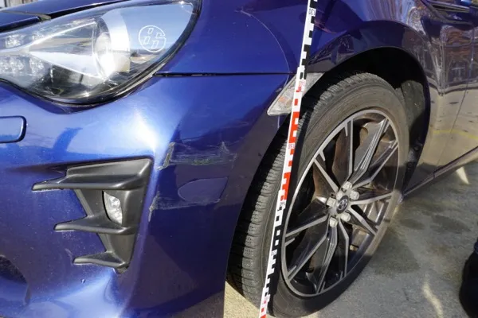
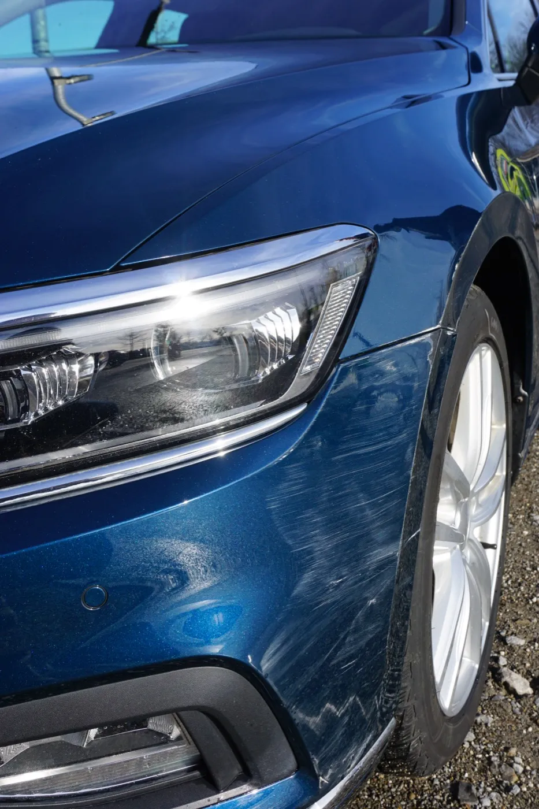

Präzise und zuverlässig
Ingenieurlich bewertet
Für Sie immer kostenfrei*
Ingenieurbüro Brückers – Kfz Gutachter Sillenbuch
Ihr unabhängiger Kfz-Sachverständiger unterstützt Sie mit professionellen Unfallgutachten und Schadengutachten in Stuttgart-Sillenbuch, Stuttgart-Heumaden und der näheren Umgebung.

Ingenieurlich bewertet
Nur in Ihrem Interesse
Selbst bei Teilschuld
So funktioniert’s
In wenigen Schritten von der ersten Kontaktaufnahme bis zur Reparatur Ihres Fahrzeugs oder Auszahlung der Schadensumme.
Sie rufen mich an und erhalten direkt eine klare Ersteinschätzung zur besten Vorgehensweise.
Gemeinsam finden wir kurzfristig einen Termin. Auf Wunsch komme ich flexibel zu Ihnen nach Hause, in die Werkstatt oder zur Arbeit.
Ich begutachte das Fahrzeug bei Ihnen vor Ort bzw. direkt in der Werkstatt. Der Termin dauert in der Regel 30 bis 45 Minuten.
Ich kalkuliere den Schaden präzise und erstelle Ihr Gutachten. Meist erhalten Sie es bereits innerhalb von 2 bis 3 Tagen.
Für Sie kostenlos
Ich sende das Gutachten direkt an die gegnerische Versicherung. Sie erhalten zeitgleich ein Exemplar zur eigenen Dokumentation.
Ich begleite Sie bis zur Regulierung und bleibe im direkten Austausch mit Ihnen sowie mit der Versicherung.
Über mich
Ansässig in Stuttgart-Heumaden im Stadtbezirk Sillenbuch, bin ich Ihr Ansprechpartner für unabhängige Kfz-Gutachten in Stuttgart und Umgebung.
Mein Name ist Bastian Brückers.
Als Diplom-Ingenieur der Fahrzeugtechnik und mit über 17 Jahren Erfahrung in der Automobilentwicklung bei Mercedes-Benz verfüge ich über tiefgehendes technisches Know-how rund um moderne Fahrzeuge und die präzise Bewertung von Unfallschäden.
Zusätzlich bin ich gelernter Kfz-Mechaniker und kenne Fahrzeuge nicht nur aus der Theorie, sondern auch aus der praktischen Werkstattarbeit. Diese Kombination aus Ingenieurswissen und handwerklicher Erfahrung ermöglicht eine besonders präzise und realistische Schadenbewertung.
Meine Qualifikation zum Kfz-Sachverständigen habe ich durch umfangreiche Fachlehrgänge bei der Gesellschaft für Technische Überwachung (GTÜ) erworben und kontinuierlich weiter ausgebaut.
Mein Anspruch: Schnelle Terminvergabe, unabhängige Bewertung und technisch fundierte Gutachten.
Als unabhängiger Sachverständiger arbeite ich ausschließlich in Ihrem Interesse und nicht im Auftrag der Versicherung.
Verlassen Sie sich auf die Expertise eines Gutachters, der Technik versteht und Ihre Ansprüche konsequent vertritt.
* Im Haftpflichtschadenfall werden die Kosten in der Regel von der gegnerischen Versicherung übernommen. Bei einer eventuellen Teilschuld verzichte ich auf eine Abrechnung gegenüber dem Auftraggeber. Nur bei Gutachten ohne gegnerische Versicherung erfolgt eine Abrechnung der Gutachterkosten.
Das sagen meine Kunden

★★★★★
„Nach meinem Auffahrunfall hat Herr Brückers innerhalb von 48 Stunden ein ausführliches Gutachten erstellt. Dank seiner Expertise hab ich den vollen Schadensersatz von der Versicherung erhalten. Absolut empfehlenswert!“
Francesco M.
Unfallgutachten — Stuttgart-Sillenbuch

★★★★★
„Ich hatte einen Parkschaden an der Stoßstange. Ich dachte zuerst, da lohnt sich kein Gutachten. Herr Brückers hat mir ein Schadensgutachten erstellt und am Ende hat die Versicherung alles übernommen. Schnell, unkompliziert und kompetent.“
Philipp L.
Schadensgutachten — Esslingen

★★★★★
„Ein anderes Auto hat mein Fahrzeug beim Vorbeifahren an der Seite gestreift und Tür sowie Seitenteil beschädigt. Herr Brückers hat kurzfristig einen Termin eingerichtet und ein sehr detailliertes Gutachten erstellt.“
Daniela G.
Schadensgutachten — Stuttgart-Heumaden
Antworten zu Kosten, Ablauf und Ihren Rechten nach einem Unfall.
Zu den FAQWichtige Tipps und Hintergrundwissen für den richtigen Umgang mit Ihrem Schaden.
Zum RatgeberPrüfen Sie überschlägig, wie Reparaturkosten im Verhältnis zum Wiederbeschaffungswert einzuordnen sind.
Zum RechnerKontakt aufnehmen
Haben Sie Fragen oder benötigen Sie ein Gutachten? Schreiben Sie mir oder rufen Sie direkt an.